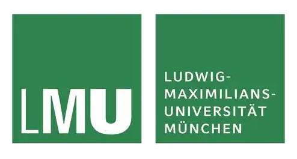

Hello! I'm currently a Master's student in German Language and Literature (Specialising in German Linguistics and Applied Linguistics) at Zhejiang University. I obtained my Bachelor's degree also from Zhejiang University.
My research interests lie at the intersection of linguistics and natural language processing, with a focus on linguistically interpretable approaches to language analysis and language model behavior.
My research has spanned several interconnected areas. In the domain of foreign language education and discourse, I have investigated the diachronic and synchronic development of vocabulary in Chinese German-language textbooks from a Digital Humanities perspective, examined teacher emotions, and analysed the use of stance markers in German academic texts by Chinese and German scholars. With the growing presence of AI in language education, I have also studied factors influencing foreign language teachers' acceptance of generative AI, compared linguistic complexity between human-written and ChatGPT-generated German texts, and contributed to the development of an automated writing feedback system for German learners. My current work employs computational linguistic methods to conduct sentiment analysis of language.
My current research interests lie at the intersection of linguistics and natural language processing. I am particularly interested in linguistically interpretable approaches to understanding and regulating language model behavior. I am also curious about the potential impact of LLM usage on users' cognitive capabilities, which I see as a promising direction for future research.
-
Chen, F., & Li, Y. (in press). 新中国成立以来德语专业教材内容发展研究——基于词汇的视角 [Development of German-major textbooks in China since 1949: A lexical perspective]. German Monthly Journal (CN31-2223/C).
-
Chen, M., & Chen, F. (2025). Diachrone und synchrone Untersuchung des Wortschatzes in chinesischen Deutschlehrwerken – Eine Analyse aus der Perspektive der Digital Humanities. Jahrbuch für Internationale Germanistik, 57(2), 201–222.DOI: 10.3726/JIG572_201 ↗
-
Chen, F. (2025). Linguistische Komplexität im Vergleich: ChatGPT-generierte Deutschtexte vs. Texte von Muttersprachlern. In Theorie und Praxis der Sprachkommunikation (pp. 1–8). Ufa University of Science and Technology.
-
Chen, F., & Lian, F. (2023). What makes Chinese secondary school German teachers feel bad: A qualitative study of teachers' emotions. In Proceedings of the 2023 Youth Academic Forum on Linguistics, Literature, Translation and Culture (pp. 16–22). American Scholars Press.

Beyond all that, I am a Ravenclaw, an INTP, a Gemini, a dog person, an amateur pianist, a guitar learner, and more to be discovered. Thank you for stopping by — it's a pleasure to introduce myself, and I look forward to an interesting conversation. Feel free to reach out!